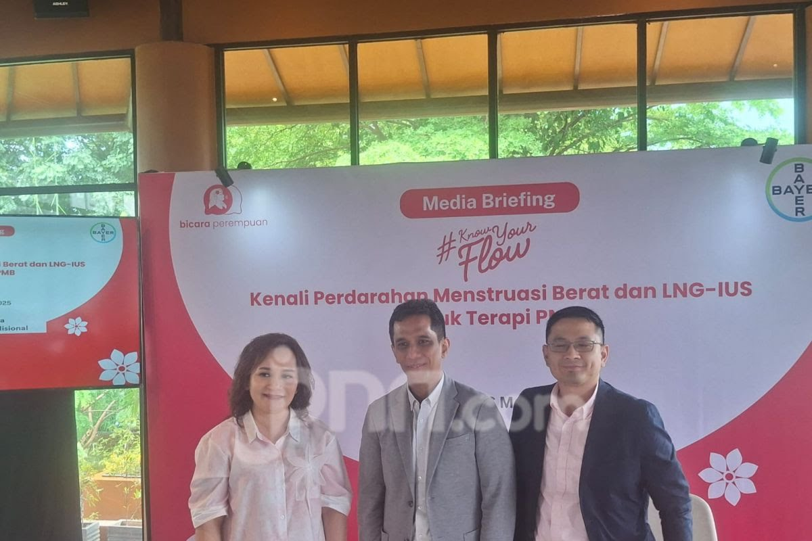
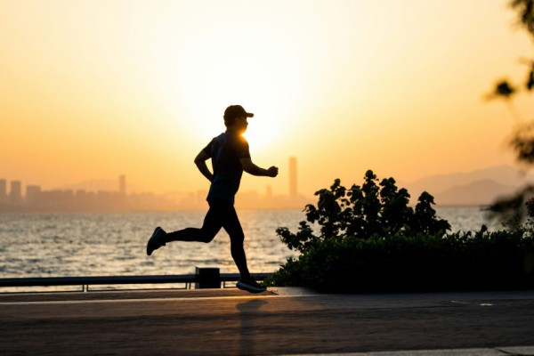

Hong Kong bertekad jadi pusat inovasi kesehatan-medis internasional
Hong Kong (ANTARA) - Konferensi Tingkat Tinggi (KTT) Asia tentang Kesehatan Global ke-5, yang diselenggarakan bersama oleh pemerintah Daerah Administratif Khusus (Special Administrative Region/SAR) Hong Kong dan Dewan Pengembangan Perdagangan Hong Kong, dibuka pada Senin (26/5), menghadirkan lebih dari 2.800 ahli dan pemimpin industri dari sekitar 40 negara dan kawasan dalam format hybrid guna menjajaki peluang-peluang baru di bidang teknologi medis. Kepala Eksekutif SAR Hong Kong John Lee mengatakan bahwa pemerintah SAR Hong Kong akan secara aktif mempromosikan pengembangan Hong Kong sebagai pusat inovasi kesehatan dan medis internasional, dengan memanfaatkan kekuatan kota itu di bawah prinsip "Satu Negara, Dua Sistem". Mengusung tema "Membina Kolaborasi Global untuk Masa Depan Bersama" (Fostering Global Collaboration for a Shared Future), KTT itu berfokus pada upaya mengatasi berbagai tantangan seperti penyakit kronis dan populasi yang menua.
Deteksi Dini Tanda PMB yang Berisiko Memicu Masalah Kesehatan Serius pada Wanita

Dokter Kandungan dan Ahli Fertilitas Endokrinologi Reproduksi FKUI RSCM, Achmad Kemal Harzif mengungkapkan Perdarahan Menstruasi Berat (PMB) atau Menoragia dapat memicu masalah kesehatan serius baik jangka pendek dan panjang. Namun, sayangnya banyak perempuan cenderung mengabaikan gejala ini karena dianggap wajar atau tabu untuk dibicarakan.
PMB biasanya ditandai dengan perdarahan yang berlangsung lebih dari tujuh hari atau volume darah yang melebihi 80 ml per siklus, mengganti pembalut setiap kurang dari 2 jam karena penuh atau keluarnya gumpalan darah besar.
Dokter Kemal menjelaskan PMB bukan hanya masalah ketidaknyamanan atau mengganggu aktivitas, tetapi dapat menjadi tanda adanya kondisi medis serius.
Dry Fasting: Manfaat Kesehatan dan Risiko
Dry fasting, atau puasa kering, adalah praktik berpuasa tanpa mengonsumsi makanan maupun minuman selama periode tertentu. Meskipun kontroversial, sejumlah penelitian ilmiah telah mengkaji potensi manfaat dan risiko dari metode puasa ini. Manfaat Kesehatan dari Dry Fasting Beberapa studi menunjukkan bahwa dry fasting dapat memberikan efek positif terhadap kesehatan metabolik dan sistem imun. Perubahan pada Sel Imun: Penelitian yang diterbitkan dalam Metabolism Open menemukan bahwa puasa kering dari fajar hingga senja selama empat minggu dapat mengurangi protein yang terkait dengan aterosklerosis dan kanker, serta meningkatkan protein yang menekan peradangan. Dr. Ayse Leyla Mindikoglu dari Baylor College of Medicine menyatakan, "Setelah berpuasa, peserta mengalami penurunan berat badan, tekanan darah, dan resistensi insulin."
Meskipun terdapat manfaat potensial, dry fasting juga memiliki risiko yang signifikan, terutama jika dilakukan tanpa pengawasan medis. Dehidrasi dan Masalah Kesehatan Lainnya: Cleveland Clinic memperingatkan bahwa dry fasting dapat menyebabkan dehidrasi, kelelahan, sakit kepala, dan masalah ginjal. Ahli diet Julia Zumpano menyatakan, "Risiko dari dry fasting tidak sebanding dengan manfaatnya—dan manfaat tersebut belum terbukti secara klinis."
Dry fasting menunjukkan potensi manfaat kesehatan, terutama dalam konteks puasa religius seperti Ramadan atau puasa Bahá'í. Namun, praktik ini juga membawa risiko yang serius jika tidak dilakukan dengan hati-hati.
Apakah Sampo Non SLS Cocok untuk Penderita Dermatitis?
Kulit kepala sensitif, seperti pada penderita dermatitis, membutuhkan perawatan ekstra hati-hati. Salah satu produk yang belakangan sering direkomendasikan adalah sampo non SLS yang klaimnya lebih lembut dan minim iritasi.Namun, sebenarnya apakah sampo non SLS cocok untuk penderita dermatitis?
Sampo non SLS (sulfate-free) adalah jenis sampo yang tidak mengandung bahan sulfat seperti Sodium lauryl sulphate (SLS) atau Sodium laureth sulphate (SLES). Bahan sulfat ini dikenal sebagai pembersih yang kuat dan mampu mengangkat kotoran serta minyak secara efektif.Namun, sifatnya yang keras, kandungan tersebut berpotensi menyebabkan masalah kulit. Misalnya saja kulit kepala menjadi kering, iritasi, bahkan merusak lapisan pelindung kulit jika digunakan dalam jangka panjang.
Bagi penderita dermatitis, kulit kepala mereka umumnya lebih sensitif dan rentan terhadap iritasi. Untuk itu, penggunaan sampo dengan SLS bisa memperparah kondisi kulit, menyebabkan rasa gatal, perih, kemerahan, bahkan pengelupasan. Karena itu, sampo non SLS dinilai lebih aman karena formulanya lebih lembut dan tidak terlalu mengikis minyak alami pada kulit kepala.Selain itu, sampo bebas sulfat juga membantu menjaga keseimbangan pH yang penting untuk mempertahankan fungsi pelindung kulit dan mencegah infeksi sekunder akibat luka atau iritasi. Tak heran jika banyak tenaga kesehatan, termasuk dokter kulit, menyarankan penderita dermatitis untuk beralih ke sampo non SLS sebagai bagian dari perawatannya.
Waktu Terbaik untuk Jogging, Efektif Pagi atau Sore?

Jogging merupakan salah satu olahraga yang untuk menjaga kebugaran tubuh. Meski begitu, memilih waktu yang tepat untuk jogging bisa memengaruhi hasil dan kenyamanan saat berolahraga.Jogging pada pagi hari terasa lebih segar, sedangkan sore cocok buat melepas penat setelah aktivitas seharian. Namun, sebenarnya waktu terbaik untuk jogging kapan?
Secara umum, pagi hari sering dianggap sebagai waktu terbaik untuk jogging. Idealnya, kamu bisa mulai antara pukul 05.30 hingga 07.00 saat udara masih bersih dan belum banyak polusi. Jika bangun sedikit lebih siang, kamu masih bisa jogging sampai pukul 08.00 atau 09.00.Waktu pagi juga cocok untuk kamu yang punya kesibukan sepanjang hari. Pasalnya, setelah lari, kamu bisa langsung melanjutkan aktivitas.
Namun, kalau kamu tipe orang yang lebih aktif sore hari, jogging antara pukul 16.30 hingga 18.00 juga tidak kalah bagus. Suhu biasanya sudah mulai turun dan tubuhmu cukup panas setelah beraktivitas sehingga risiko cedera bisa lebih kecil. Banyak orang pun merasa jogging sore hari bisa membantu mengurangi stres dan membuat tidur lebih nyenyak malam harinya.Pada akhirnya, waktu terbaik untuk jogging tergantung pada gaya hidup, jadwal harian, dan bagaimana tubuh merespons olahraga pada waktu tertentu. Beberapa orang lebih bertenaga saat pagi, sedangkan lainnya justru lebih optimal saat sore atau malam